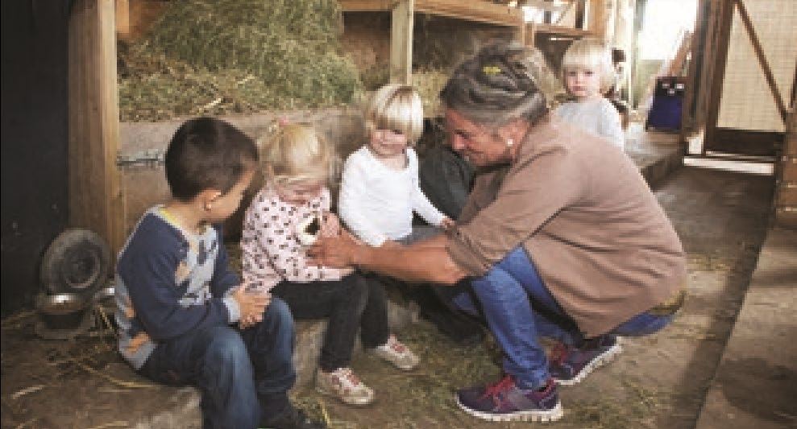
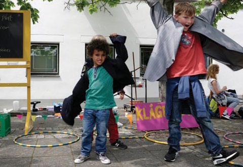

Fakta-ark 3: Dagtilbud
Áudio
sidde 17
Fakta-ark 3: Dagtilbud
Læremateriale Til Medborgerskabsprøven
sidde 18
Det har været et politisk mål i Danmark siden 1960’erne at give forældre mulighed for at få deres børn passet uden for hjemmet i vuggestuer og børne haver, fordi man ønskede at få kvinderne ud på arbejdsmarkedet. I dag arbejder begge forældre normalt uden for hjemmet. Langt de fleste mindre børn går derfor i vuggestue, børnehave eller dagpleje. De fleste børn mellem tre og fem år passes uden for hjemmet. Fælles for alle former for pasningstilbud er, at det pædagogiske arbejde skal fremme* børns trivsel*, udvikling og læring.
Læremateriale Til Medborgerskabsprøven Fakta-Ark 3: Dagtilbud
Alle børn har ret til en plads i et dagtilbud. Det er kommunerne, der er ansvarlige for dagtilbuddene, men det er forskelligt fra kommune til kommune, hvilke tilbud der er. De mest almindelige er vuggestue, børnehave og dagpleje. Kommunen betaler en del af udgiften, mens forældrene betaler den resterende del. Men hvis fx forældrenes indtægt er lav, eller der er tale om en enlig forsørger, er der mulighed for at søge om yderligere økonomisk tilskud fra kommunen.
Dette fakta-ark handler om: • Vuggestue • Dagpleje • Børnehave • SFO og fritidsklub
Vuggestue
En vuggestue er for børn fra cirka seks måneder og op til cirka tre år. Personalet i vuggestuer (pædagogerne) skal bl.a. sikre, at det enkelte barn trives, lærer og udvikler sig, ligesom de skal medvirke til, at børnene får omsorg og en god og tryg opvækst. Personalet skal arbejde med planer for det pædagogiske arbejde i vuggestuen. Herigennem skal børn bl.a. lære at være sammen med hinanden og at tage hensyn. Børnene skal også støttes i at udvikle deres sprog, og det gør man fx ved at tale med dem, synge sange og læse bøger for dem. Pædagogerne hjælper også børnene til at udvikle deres krop fx ved at løbe, danse, tegne og hoppe. Det gør de både indenfor i vuggestuen og udenfor på fx legepladsen.
Dagpleje
Ikke alle småbørn kommer i vuggestue. Nogle kommer i dagpleje. En dagpleje er typisk for børn fra ca. seks måneder til ca. tre år. I en dagpleje bliver barnet passet af en dagplejer sammen med to-fire andre børn i dagplejerens private hjem. For at blive godkendt af kommunen som dagplejer skal man overholde bestemte krav* med hensyn til blandt andet mad, hygiejne, sundhed og rengøring. Det er fx ikke tilladt at ryge i de dele af dagplejehjemmet, hvor børnene opholder sig. Dagplejen skal ligesom vuggestuen arbejde med planer for det pædagogiske arbejde, og mange af aktiviteterne kan være de samme som i vuggestuen.


sidde 19
Børnehave
Læremateriale Til Medborgerskabsprøven Fakta-Ark 3: Dagtilbud
En børnehave er for børn fra ca. tre år og op til seks år. I børnehaven skal der også arbejdes med planer for det pædagogiske arbejde. Pædagogerne lærer fx børnene, hvordan de leger sammen, og hvordan de kan løse uenigheder med hinanden. Også i børnehaven læser man historier og synger sange, både for at udvikle sprog, men også for at skabe et fællesskab blandt børnene. I mange børnehaver fylder de traditionelle kristne højtider* en del, fx jul og påske. I den forbindelse pyntes institutionen, og børnene er med til at tegne og klippe pynt. Man lærer også om andre traditioner og religiøse højtider end de kristne som fx om Eid* eller om kinesisk nytår. Der er typisk mindre personale i en børnehave end i en vuggestue, fordi børnene er større og kan flere ting selv.
Sfo Og Fritidsklub
SFO er en forkortelse for SkoleFritidsOrdning. SFO er et sted, hvor børn i folke skolen kan blive passet før eller efter skoletid af pædagoger. I SFO’en er der nogle fælles aktiviteter for alle børnene. Det kan fx være at spille musik og teater, at male, sy eller tegne, men det kan også være sportsaktiviteter som fx svøm ning, fodbold eller skøjteløb. For de større børn findes der i mange kommuner klubtilbud og andre fritidstilbud. Klubtilbud kan fx være et tilbud til de større børn, som de kan benytte sig af efter skoletid. Et af målene med klubtilbud er at lære de større børn at indgå i samarbejde og fællesskab med andre unge.
I klubben kan man mødes og spille alt fra fodbold til musik. Nogle steder er der tilbud til unge om at gå i klub om aftenen. Her ser man fx film, spiller musik eller spiller spil sammen. Klub tilbud skal give større børn og unge ideer til, hvad man kan lave i fritiden, så de selv bedre kan planlægge deres fritid.
sidde 20
Forældresamarbejde
Læremateriale Til Medborgerskabsprøven Fakta-Ark 3: Dagtilbud
Det er vigtigt, at der er en god kontakt mellem forældre og pædagoger i insti tutionen. Det betyder meget for, om barnet har det godt. Pædagogerne kan fortælle forældrene om, hvad der sker i dagligdagen i institutionen. Og foræl drene kan fortælle pædagogerne om, hvordan det går med barnet derhjemme. Mange institutioner holder også forældremøder. Her kan forældrene få mere at vide om, hvad der sker i institutionen. De kan også komme med forslag til forbedringer*. Forældrene vælger også repræsentanter til forældrebestyrelsen. Forældrebestyrelsen har indflydelse* på fx institutionens økonomiske disposi tioner og aktiviteter for børnene.
Fonte: Læremateriale til Medborgerskabsprøven, SIRI.